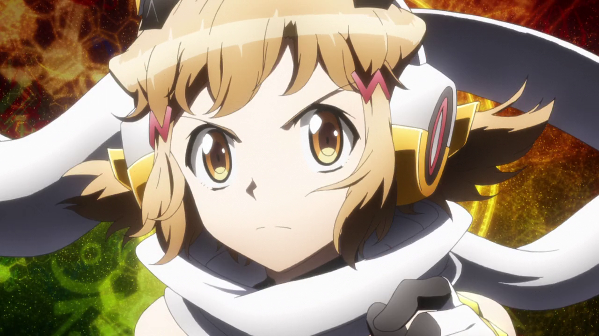

SG-r03'
Gungnir
Hibiki Tachibana
Hibiki es extrovertida y amigable, trata a todos con amabilidad incluso aquellos que solian ser sus enemigos. No busca pelear a menos que sea necesariamente, no le gusta tener batallas sin sentido cuando cree que primero se puede hablar de la causa con calma. De lo contrario, sin problema usara su symphogear para ayudar a las personas que estan en peligro. con frecuencia oculta sus sentimientos sobre cosas específicas y rara vez se muestra triste con alguien cuando se trata de un problema relacionado con ella misma, incluso con sus amigos, pero también puede emocionarse y llorar fácilmente si escucha historias tristes. A este respecto, se obliga a sí misma a mantener una sonrisa para los demás. La única persona que normalmente puede decir que está poniendo una fachada es Miku. Tiene un estilo de pelea de cuerpo a cuerpo combinando diversas tecnicas de cualquier arte marcial, su estilo musical es tipo celtica moderna